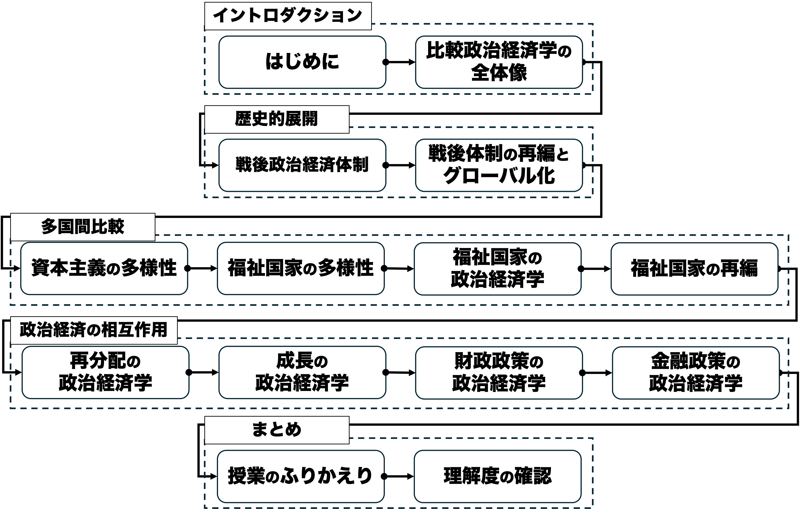

授業概要
グローバル化が進む現代、政治と経済とはますます強く結びついており、両者を分けて考えることはもはや不可能です。この科目では、そうした政治と経済の関わりについて、国際比較の観点から考察できる能力を身につけることを目的としています。比較政治経済学の研究成果から関連する概念・理論・モデルを学び、日本をはじめとした先進諸国の政治経済について、「印象」ではなく「根拠」に基づいて分析できる視座を提供していきます。授業では適宜アクティブラーニングを取り入れ、お互いに学び合いながら知識の習得を深めるとともに、学んだ知識を応用しながら各国の政治経済を考察する経験を積めるよう手助けをしていきます。
なお、本科目は政治経済学部が定める学修成果2「学科別の中級基礎知識＝政治現象を経済現象との関連で理解し、数理的・経験的分析手法と政治哲学の理念にもとづいて分析できる（政治学科）」の達成を目指すものとなっています。
キーワード：比較政治経済学、戦後政治経済体制、グローバル化、福祉国家、資本主義の多様性、不平等、経済成長、財政政策、金融政策
授業の到達目標
本科目では、特に先進諸国における政治と経済の関わりについて、国際比較の観点から考察できる能力を身につけることを目指します。本科目を履修することで、具体的には以下の目標の達成が期待できます。
- 学問領域としての比較政治経済学を説明できる。（学修成果2）
- 先進諸国に広まった政治経済体制の特徴を列挙しつつ、その歴史的展開を描写できる。（学修成果2）
- 先進各国における政治経済のあり方について、特に資本主義と福祉国家に着目して比較できる。（学修成果2）
- 比較政治経済学の概念・理論・モデルを用いて、政治と経済との相互作用を議論できる。（学修成果2）
事前・事後学習の内容
- 事前学習（0.5〜1時間）…教科書の指定された部分を一読した上で毎回の授業に臨んでください。
- 事後学習（1〜2時間）…Moodle上のアンケート機能で設定されたリアクションペーパーに毎回回答するとともに、講義資料を再確認して復習してください。なお授業全体および各回授業で設定されている到達目標がそのまま評価項目となるようにしていますので、復習の際の指針としてください。
授業計画
| タイトル | 日付 | 目的／概要 | 予習課題 |
|---|---|---|---|
| 01/はじめに | 10/5 | 本科目の目的・計画・評価方法・諸注意を紹介し、受講の可否の判断材料を提供する。仲間と受講の動機を共有し、今後学んでいくための環境を整える。 | なし |
| 02/比較政治経済学の全体像 | 10/12 | 政治と経済はそれぞれ何でどのような関係にあるのかを考察するとともに、比較政治経済学の全体像をつかむ。排除性と競合性に注目して財を分類するとともに、現代の比較政治経済学が誕生するまでの歴史的展開や3つのアプローチを概観する。 | 序章 |
| 03/戦後政治経済体制 | 10/9 | 戦後先進国で成立した政治経済体制はどのようなものであるのか、その基本的な特徴を理解する。まず19世紀のパックス・ブリタニカの下で成立した自由主義体制について概観したのち、戦後の国際政治経済体制の特徴を19世紀体制と対比する形で議論する。戦後体制を説明する概念として「埋め込まれた自由主義」や、理論的基盤となったケインズ主義経済学を詳しく考察する。 | 第1章1-3 |
| 04/戦後体制の再編とグローバル化 | 10/26 | 戦後政治経済体制が1970年代以降どのように変容してきたのか主要な要因を学ぶとともに、特にグローバル化の影響を詳しく検討する。グローバル化の現状をデータに基づいて概観したのち、グローバル化が政治に与える影響を考察する。 | 第1章4、第2章 |
| 05/資本主義の多様性 | 11/2 | コーポラティズム論および資本主義の多様性論を学び、先進各国の政治経済のあり方を比較するとともに、グローバル化の影響を検討する。 | 第3章 |
| 06/福祉国家の多様性 | 11/9 | 代表的な福祉国家の類型論を学び、先進各国の福祉国家のあり方を比較するとともに、日本の位置付けを考察する。 | 第4章、第5章3 |
| 07/福祉国家の政治経済学 | 11/16 | 福祉国家の成立や変容過程を説明する代表的な理論やモデルを学び、相互に繰り広げられた論争を理解する。 | 第5章1-2 |
| 08/福祉国家の再編 | 11/23 | 福祉国家が1970年代以降どのように変容してきたのか、主要な要因を学ぶとともに、対応の一つとしての「社会的投資」戦略を知る。 | 第6章 |
| 09/再分配の政治経済学 | 11/30 | なぜ再分配が行われるのか理論的に考えるとともに、先進各国の再分配規模を比較し、その違いを政治制度から説明する。 | 第8章 |
| 10/成長の政治経済学 | 12/7 | 政治はどのように経済成長に影響を与えるのかを理論的に考えるとともに、特に政治体制と経済成長の関係を検討する。 | 第9章 |
| 11/財政政策の政治経済学 | 12/14 | マクロ経済政策として財政政策を位置付け、財政赤字に政治が与える影響について理論的に考察する。 | 第10章 |
| 12/金融政策の政治経済学 | 12/21 | マクロ経済政策として金融政策を位置付け、中央銀行と政治、そして経済実績との関係を考察する。 | 第11章 |
| 13/授業のふりかえり | 1/11 | ワークなどを通じて学んだことを復習する。 | なし |
| 14/理解度の確認 | 1/18 | 授業のまとめと理解度の確認。 | なし |
グラフィックシラバス

教科書
田中拓道・近藤正基・矢内勇生・上川龍之進（2020）『政治経済学－グローバル時代の国家と市場－』有斐閣．
【購入必須】比較政治経済学について非常にわかりやすく書かれているので、最初の一冊として最適。最新の研究動向を踏まえた上で書かれているのも良い。
参考文献
新川敏光・井戸正伸・宮本太郎・眞柄秀子（2004）『比較政治経済学』有斐閣．
比較政治経済学の最初の邦語の教科書であり、指定教科書よりも詳細な知識を得られる。ただし20年以上前の教科書なので、記述が古い点に注意。
浅古泰史・善教将大編（2025）『数理とデータで読み解く日本政治』日本評論社.
データや数理分析を用い、より日本に焦点を当てて政治経済を分析した好著。
飯田敬輔（2007）『国際政治経済』東京大学出版会．
関連分野である国際政治経済学の教科書。国際関係論から見た政治経済を学びたいときにおすすめ。
成績評価方法
- 試験（70%）…（到達目標１〜４）第14回に期末試験を実施します。授業の内容全般についての理解度を評価します。
- 平常点（30%）…（到達目標１〜４）各回の予習チェックシートおよびリアクションペーパーの提出を評価します。